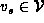
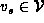
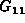

Data Structures and Algorithms
with Object-Oriented Design Patterns in Java
Data Structures and Algorithms
with Object-Oriented Design Patterns in Java
In this section we consider the single-source shortest path problem:
Given an edge-weighted graph  and a vertex ,
find the shortest weighted path from
and a vertex ,
find the shortest weighted path from  to every other vertex in
to every other vertex in  .
.
Why do we find the shortest path to every other vertex
if we are interested only in the shortest path from,
say,  to
to  ?
It turns out that in order to find the shortest path from
?
It turns out that in order to find the shortest path from  to
to  ,
it is necessary to find the shortest path from
,
it is necessary to find the shortest path from  to every other vertex in G!
If a vertex is ignored, say
to every other vertex in G!
If a vertex is ignored, say  ,
then we will not consider any of the paths from
,
then we will not consider any of the paths from  to
to  that pass through
that pass through  .
But if we fail to consider all the paths from
.
But if we fail to consider all the paths from  to
to  ,
we cannot be assured of finding the shortest one.
,
we cannot be assured of finding the shortest one.
Furthermore, suppose the shortest path from  to
to  passes through some intermediate node
passes through some intermediate node  .
That is, the shortest path is of the form
It must be the case that the portion of P between
.
That is, the shortest path is of the form
It must be the case that the portion of P between  to
to  is also the shortest path from
is also the shortest path from  to
to  .
Suppose it is not.
Then there exists another shorter path from
.
Suppose it is not.
Then there exists another shorter path from  to
to  .
But then, P would not be the shortest path from
.
But then, P would not be the shortest path from  to
to  ,
because we could obtain a shorter one by replacing the portion
of P between
,
because we could obtain a shorter one by replacing the portion
of P between  and
and  by the shorter path.
by the shorter path.
Consider the directed graph  shown in Figure  .
The shortest weighted path between vertices b and f is the path
which has the weighted path length nine.
On the other hand, the shortest unweighted path is from b to f is
the path of length three, .
.
The shortest weighted path between vertices b and f is the path
which has the weighted path length nine.
On the other hand, the shortest unweighted path is from b to f is
the path of length three, .
Figure: Two edge-weighted directed graphs.
As long as all the edge weights are non-negative (as is the case for ), the shortest-path problem is well defined. Unfortunately, things get a little tricky in the presence of negative edge weights.
For example, consider the graph shown in Figure .
Suppose we are looking for the shortest path from d to f.
Exactly two edges emanate from vertex d,
both with the same edge weight of five.
If the graph contained only positive edge weights,
there could be no shorter path than the direct path .
However, in a graph that contains negative weights, a long path gets ``shorter'' when we add edges with negative weights to it. For example, the path has a total weighted path length of four, even though the first edge, (d,a), has the weight five.
But negative weights are even more insidious than this:
For example, the path ,
which also joins vertex d to f,
has a weighted path length of two
but the path  has length zero.
That is, as the number of edges in the path increases,
the weighted path length decreases!
The problem in this case is the existence of the cycle
the weighted path length of which is less than zero.
Such a cycle is called a negative cost cycle .
has length zero.
That is, as the number of edges in the path increases,
the weighted path length decreases!
The problem in this case is the existence of the cycle
the weighted path length of which is less than zero.
Such a cycle is called a negative cost cycle .
Clearly, the shortest-path problem is not defined for graphs that contain negative cost cycles. However, negative edges are not intrinsically bad. Solutions to the problem do exist for graphs that contain both positive and negative edge weights, as long as there are no negative cost cycles. Nevertheless, the problem is greatly simplified when all edges carry non-negative weights.
 Copyright © 1998 by Bruno R. Preiss, P.Eng. All rights reserved.
Copyright © 1998 by Bruno R. Preiss, P.Eng. All rights reserved.